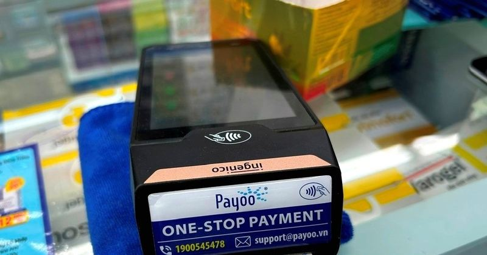

⚡Doanh nghiệp nào được dùng hóa đơn điện tử không có mã của cơ quan thuế?
Điểm b khoản 1 Điều 6 Nghị định 254/2026 của Chính phủ có hiệu lực từ ngày 1/7/2026 quy định về đối tượng được sử dụng hóa đơn điện tử không có mã của cơ quan thuế khi bán hàng, cung cấp dịch vụ. Cụ thể, nhóm thứ nhất là